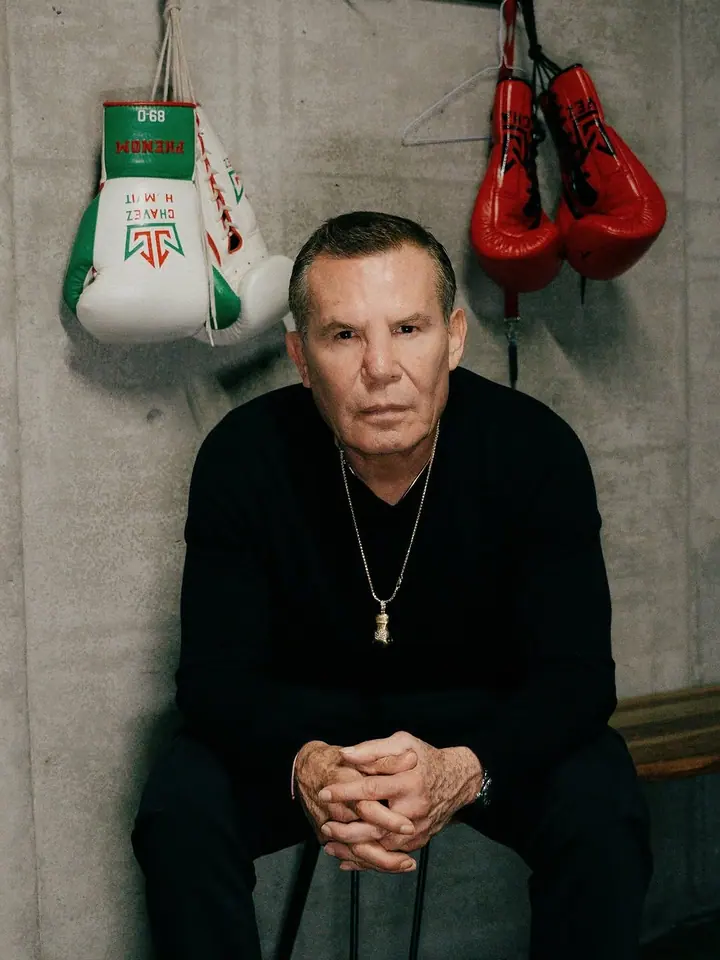
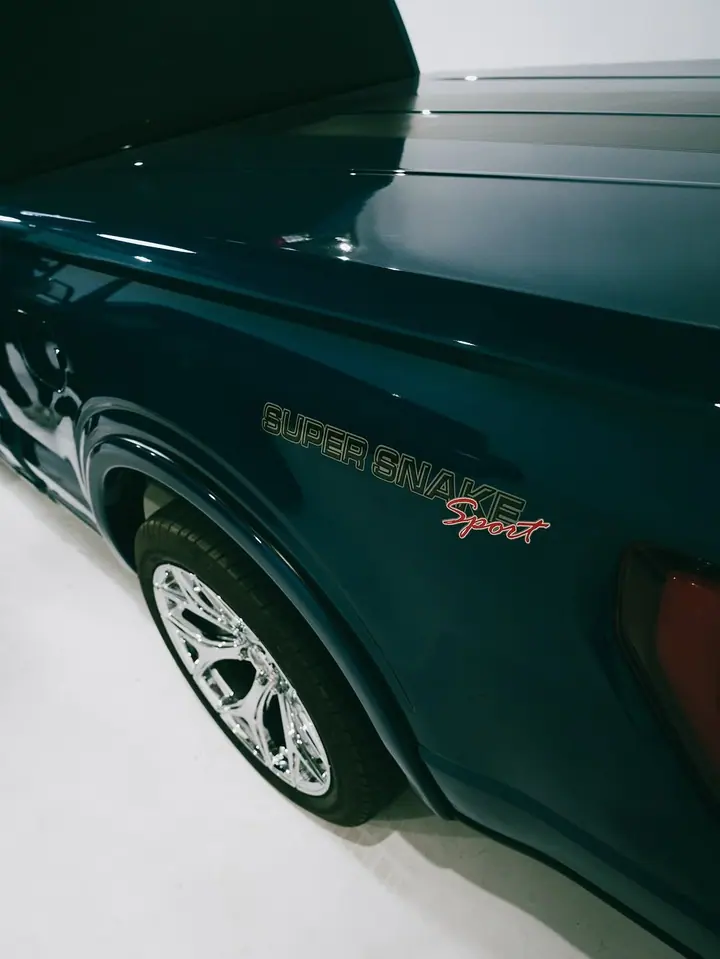
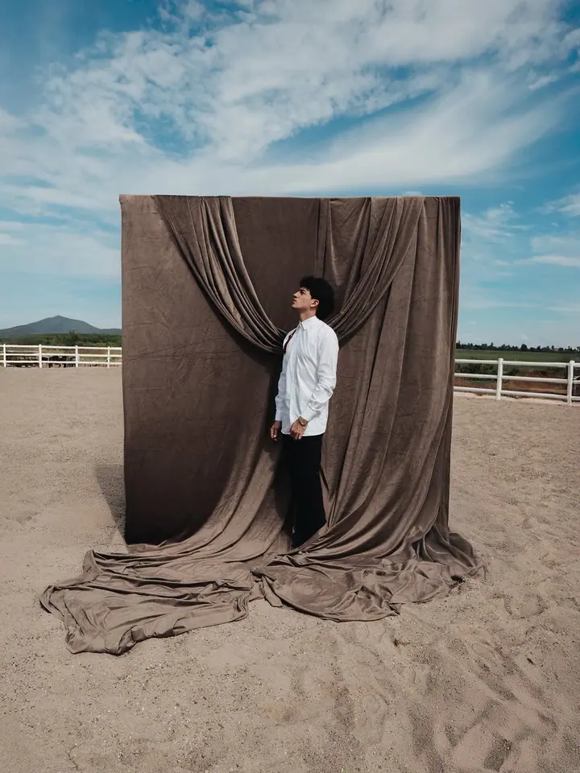
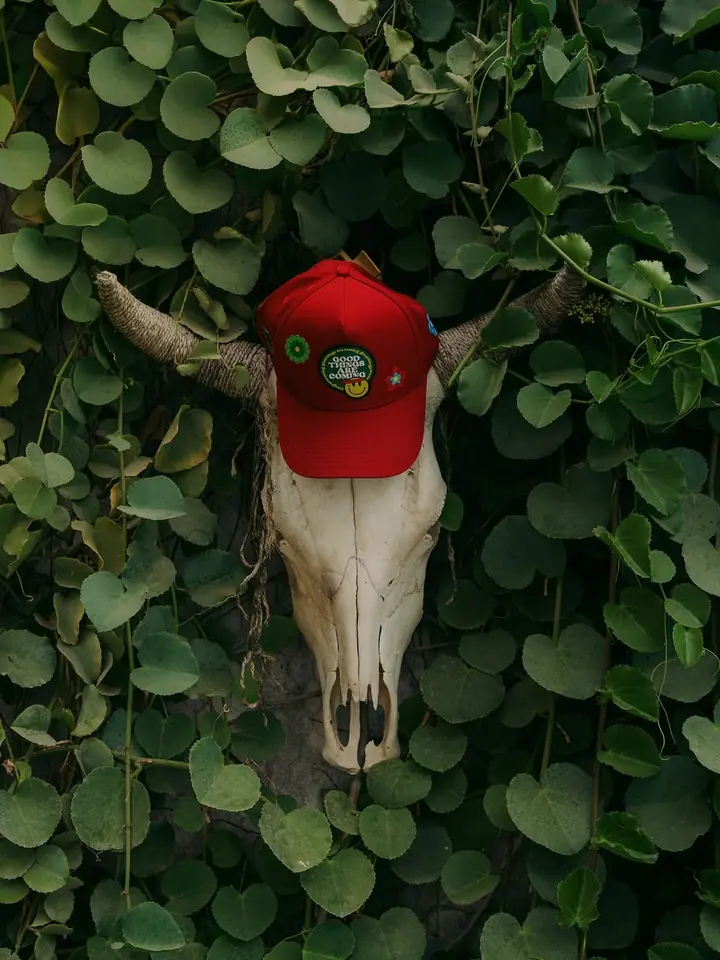
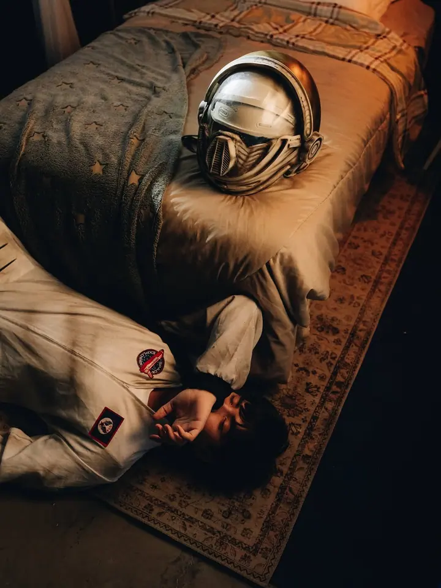
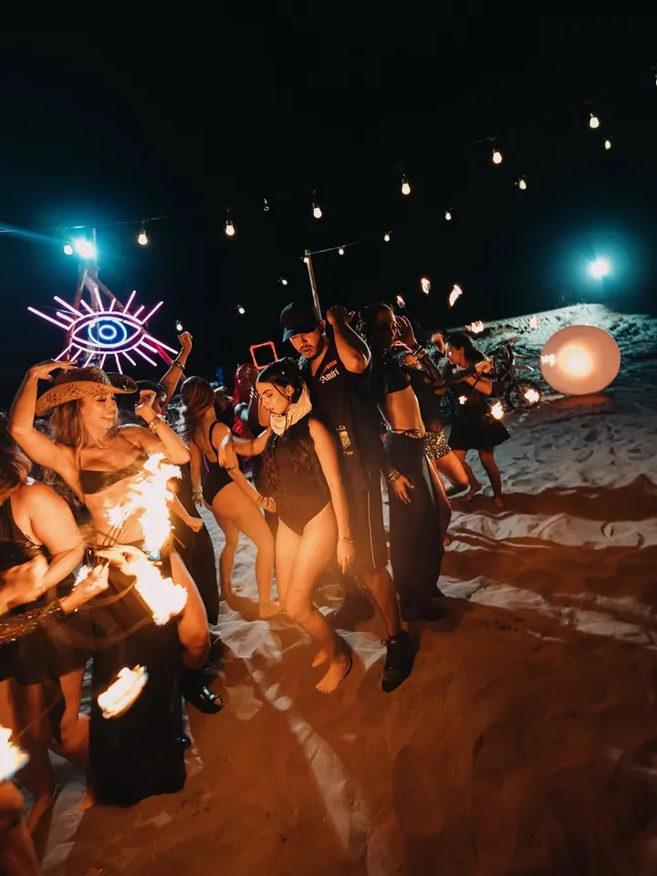
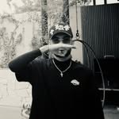

01 / 04
Koncerty a turné
Fotím koncerty a celá turné, od světel nad pódiem po atmosféru v publiku. V portfoliu mám třeba Éxodo Tour s Peso Plumou nebo Esencia Tour s Humbem.
Zeptat se na termín→





Fotky a video pro hudbu i značky
Zeptat se na termín →(01) Ahoj
Jmenuji se Rodnez a jsem fotograf a videograf. Fotím koncerty a turné , sessions s umělci a natáčím videoklipy i komerční projekty pro značky .
1 866lidí sleduje mou práci na Instagramu
67příspěvků s fotkami a příběhy
(02) Co dělám
01 / 04
Fotím koncerty a celá turné, od světel nad pódiem po atmosféru v publiku. V portfoliu mám třeba Éxodo Tour s Peso Plumou nebo Esencia Tour s Humbem.
Zeptat se na termín→02 / 04
Autorská focení pro hudebníky, sportovce a osobnosti, která mají vlastní příběh a výraz. Každá session vzniká podle konceptu, ne podle šablony.
Zeptat se na termín→03 / 04
Fotky a video pro značky, obchody a galerie, které chtějí vypadat jinak než ostatní. Spolupracoval jsem třeba se Zen by Zasshi, Cabinet Depot nebo Quarto Galeria.
Zeptat se na termín→Dále nabízím
Natáčím hudební videa od nápadu až po finální střih. Pracoval jsem na klipech jako Grietas de Oro pro Alemána nebo Quema a Rodea2 pro Octavia Cuadrase.
↗(04) Postup
Od první zprávy po hotovou galerii.
Krok 1 z 4
Napíšete mi, co chystáte: koncert, klip, session nebo kampaň. Domluvíme se na termínu a rozsahu.
Krok 2 z 4
Společně vymyslíme vizuální směr, místo, světlo a rekvizity, aby výsledek seděl k vaší hudbě nebo značce.
Krok 3 z 4
Na place se starám o obraz od první do poslední záběrové minuty, ať jde o pódium, ateliér nebo exteriér.
Krok 4 z 4
Fotky upravím a video sestříhám v jednotném stylu. Hotové materiály vám předám připravené k publikaci.
Reflektory, kouř a tisíce lidí pod pódiem.
(05) Za objektivem
Jmenuji se Rodnez a fotím i točím. Moje práce stojí na kreativní produkci, takže nejdřív hledám nápad a teprve potom techniku. Pohybuji se hlavně kolem hudby, ale stejně rád pracuji pro značky.
Stál jsem v zákulisí i pod pódiem na turné jako Éxodo Tour s Peso Plumou, Evo Tour s Marca Registrada nebo Parranda Tour. Mám rád tu chvíli, kdy se rozsvítí reflektory a hala ztichne.
Kromě koncertů natáčím videoklipy, dělám coverarty a autorská focení s umělci. Ať jde o hudebníka, boxera nebo obchod s nábytkem, chci, aby výsledek měl atmosféru a dal se poznat na první pohled.

Rodnez
Rodnez · Fotograf a videograf pro hudbu a značky
Ano, dělám fotky i video. U koncertu, klipu i komerční zakázky se dá obojí domluvit dohromady.
Hudba je můj hlavní svět. Fotím koncerty a turné, natáčím videoklipy a dělám coverarty i promo fotky.
Ano, komerční produkce je jedna z mých hlavních služeb. Pracoval jsem pro módní značky, obchody i galerie.
Každý projekt je jiný, proto cenu připravuji na míru podle rozsahu, počtu dní a výstupů. Napište mi a pošlu nabídku.
(07) Kontakt
Napište pár vět o tom, co si představujete, a termín, který se vám hodí.
d.rodnez0@gmail.com